Saturday, April 17, 2004
O harp and altar, of the fury fused
Boston has a lovely new bridge, the Zakim bridge, that rises like a big white harp from the industrial lowlands around the harbor. Its gleaming white cables stream from two wishbone-shaped arches at either end whose capping towers echo the obelisk of the Bunker Hill Monument, visible in Charlestown just to the east. Leonard Zakim, the much beloved former director of the local chapter of the Anti-Defamation League, died of cancer in 1999, quite young, after a life dedicated to "building bridges" between communities and fighting for the civil rights of minorities. To commemorate this brilliant local activist, the new cable-stayed span was to be called "The Leonard P. Zakim Freedom Bridge."
In fact, the bridge's full name became the Leonard P. Zakim - Bunker Hill Memorial Bridge, an unwieldly mouthful cobbled together after some Charlestown residents objected to naming the bridge for Zakim. "What," some asked, "do Jews have to do with the Battle of Bunker Hill ?" (A question that historians quickly answered.)
Nonetheless, the community indignation was signal for Governor Cellucci -- known more for being prickly, irritable and defensive than courageous or visionary -- to expand the original dedication to include homage to the waspy obelisk. It was an ugly little moment, imbued with a whiff of anti-semitism. Angry, ignoring Zakim's peacemaker spirit, I took to calling it "The Leonard P. Zakim - Adolph Hitler Memorial Bridge."
I'm pleased to report that, today, it's mostly called the Zakim bridge.
Which brings me to the question of the bridge's gender.
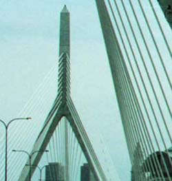
My husband, the sharp-witted and ever-patient DK, thinks I am too prone to give a Freudian reading to objects, landscapes and architectures. He's probably correct. "What does that remind you of," he'll snicker, as we drive through a tunnel or buy bananas.
The obelisk is, of course, the bull goose looney of phallic symbols. And the Zakim bridge boasts two of them, one at each end. One would think that to be a case-resting, QED-ing, argument-ending talking point. But approach Boston at night, I challenge you, from the south, and emerge from the Bigly Dug underground highway: I defy you to tell me that what faces you is simply a boy.
The beautiful archway, the thick-strung cables, the pulsating red aviation light at the top, the inwardly vectoring road -- how could it not bring to mind the silent film-within-a-film in Pedro Almodovar's Talk to Me, in which a miniscule man, "The Shrinking Lover," traverses the undulant landscape of his paramour's sleeping body and, finally, walks in ? It is a similar vulvoid archway through which I pass, shivering with delight, onto the brilliant, harp-strung expanse of Lenny's beautiful bridge. Not, as I said, simply a boy. But not just a girl, either.
The Zakim bridge invites us to re-examine the antiquated, repressive notions of gender and sexuality that are fueling the current efforts -- gubernatorially spearheaded, or, in keeping with stereotype, obelisked -- to undo the supreme court's recent clear and correct expansion of marriage rights to include all citizens.
Thursday, April 15, 2004
Art Criticism

The graffitist critiques the river path's long mural, a work of gentle civic homage "by local art students." Under the redactor's sardonic brush, the redbrick factory, symbol of the city's industrial past, bleeds white at the windows while a white cloud swallows it from outside. The white is hot and violent. Magnesium burning with retina-scorching light. A caustic plume of toxin, quicklime to the eyes. She deconstructs "heritage," that time-honored schoolroom topic, with her lead-white allusions to Bhopal, Three Mile Island, Chernobyl, and even the Twin Towers. I see in her gouged out, threatened edifice a burnt out bus in Tel Aviv, and a bulldozed house in Nablus.
I imagine, then, that the teacher arrives, dragging the vandal by the ear, making an example of her. The teacher looks strangely like Governor Romney -- meticulous, blank, blandly handsome, cold as a power point. He is here to defend "heritage." From his mouth, it sounds strangely like "privilege" or maybe "marriage." The vandal scowls at his side.
The teacher -- the Governor -- is worried about "confusion." The "confusion" that will occur if certain marriages proceed in May, and are later (as he so dearly hopes) prohibited.
Never mind that he himself has taken something simple and clear -- a stunning and courageous declaration of equality and rights -- and made it into a political, legislative and human nightmare. That is acceptable "confusion." Good confusion. That minorities shall suffer is right in keeping with our heritage.
The vandal, smirking now, dribbles white paint onto the teacher's wingtips.
Tuesday, April 13, 2004
Pals
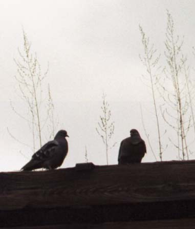
CRAZED
And The Rain...
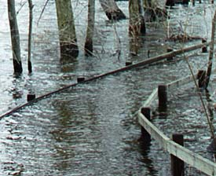
... it raineth everyday.
Sunday, April 11, 2004
Alder
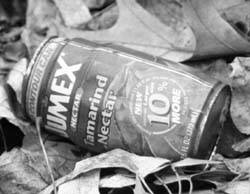
The river's receding, and the lowland along the bank is scattered with every imaginabile species of beverage container from Poland Springs, Dasani and Dunkin Donuts, to Budweiser, Seagram's, Pepsi, Coke and even Jumex Tamarind Nectar in the New 10% More Contour can. I saw plastic and glass bottles, cardboard, plastic and styrofoam cups, soda and beer cans, a cardboard Bud case wedged in a bush, even a five gallon springwater spigoted keg lying on its side like a beached whale.
We, apparantly, thirst. And powerfully.
The spectacle of the detritus of unslakable thirst befouling the already foul river is disheartening. The river is undrinkably contaminated, and buying expensive bottles of Brand Name water in unbiodegradable containers has become a craze, as has, apparantly, hurling the empties on the ground.
But amidst the trash (and I'm good to go for the river clean up in two weeks!) and upstaging it, is spring. I'm not enough of a botanist to identify most plants from their fledgling rosettes and seedlings, but already the ground ivy with its round, cobblestoned and scalloped leaves, is flourishing. A bracing green amidst gray and brown. Other sprouts -- feathery, succulent, blade-like -- are pushing up between dead leaves.

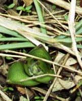
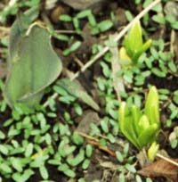
At the margin between field and wooded riverbank a few grape hyacinths are flowering, gloriously purple.
And, in the muck, a snake slithered by; noticing me, it stopped. It was small, black with dull yellow lengthwise stripes. It raised its head and looked at me. Too fascinated to be afraid, I crept closer, focused, and snapped a picture. And another. Then my brain whirred on: you ninny, that's a friggin' SNAKE ! What if it's a water moccasin or a copperhead, I thought, rummaging through my toybox of childhood nightmares, pioneers slashing the skin above snakebites with rusty knives, sucking out the venom, grisly, unbearably painful deaths. It was probably a garden snake.
Midair, the alders are hosting an incredibly sexy dance. All winter the little female "cones" and the longer male catkins have been tightly bundled against the cold making hard, dark sillhouettes against gray sky and snow. Up close they were dark maroon/brown.
 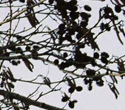
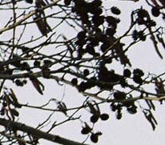
Now, the male catkins have become swollen and feathery with tiny flowers and are polllinating the little club-like fledgling females beside them. Which will become cones that fall and seed the ground.
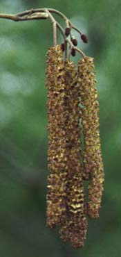
Perfect themes for Easter Sunday: thirst, death, resurrection, life.
May all beings be happy and free from suffering.
The river's receding, and the lowland along the bank is scattered with every imaginabile species of beverage container from Poland Springs, Dasani and Dunkin Donuts, to Budweiser, Seagram's, Pepsi, Coke and even Jumex Tamarind Nectar in the New 10% More Contour can. I saw plastic and glass bottles, cardboard, plastic and styrofoam cups, soda and beer cans, a cardboard Bud case wedged in a bush, even a five gallon springwater spigoted keg lying on its side like a beached whale.
We, apparantly, thirst. And powerfully.
The spectacle of the detritus of unslakable thirst befouling the already foul river is disheartening. The river is undrinkably contaminated, and buying expensive bottles of Brand Name water in unbiodegradable containers has become a craze, as has, apparantly, hurling the empties on the ground.
But amidst the trash (and I'm good to go for the river clean up in two weeks!) and upstaging it, is spring. I'm not enough of a botanist to identify most plants from their fledgling rosettes and seedlings, but already the ground ivy with its round, cobblestoned and scalloped leaves, is flourishing. A bracing green amidst gray and brown. Other sprouts -- feathery, succulent, blade-like -- are pushing up between dead leaves.
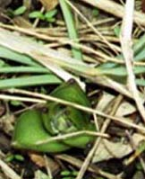
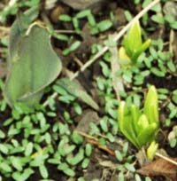
At the margin between field and wooded riverbank a few grape hyacinths are flowering, gloriously purple.
And, in the muck, a snake slithered by; noticing me, it stopped. It was small, black with dull yellow lengthwise stripes. It raised its head and looked at me. Too fascinated to be afraid, I crept closer, focused, and snapped a picture. And another. Then my brain whirred on: you ninny, that's a friggin' SNAKE ! What if it's a water moccasin or a copperhead, I thought, rummaging through my toybox of childhood nightmares, pioneers slashing the skin above snakebites with rusty knives, sucking out the venom, grisly, unbearably painful deaths. It was probably a garden snake.
Midair, the alders are hosting an incredibly sexy dance. All winter the little female "cones" and the longer male catkins have been tightly bundled against the cold making hard, dark sillhouettes against gray sky and snow. Up close they were dark maroon/brown.
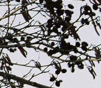Now, the male catkins have become swollen and feathery with tiny flowers and are polllinating the little club-like fledgling females beside them. Which will become cones that fall and seed the ground.
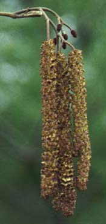
Perfect themes for Easter Sunday: thirst, death, resurrection, life.
May all beings be happy and free from suffering.